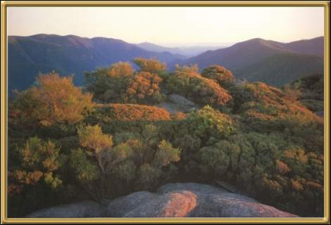

Photographer: Unknown
This National Park covers part of the Blue Mountains and is very beautiful. The Jenolan Caves are also part of this park. The caves were opened in 1866, and even for those of us who are somewhat claustrophobic, are definitely worth visiting.